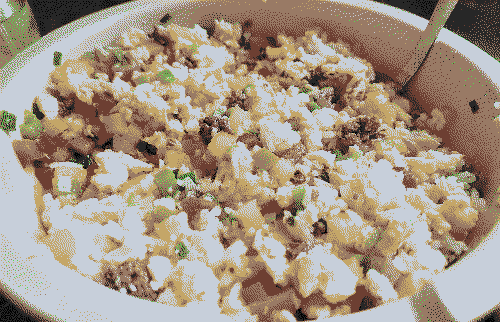

fried rice
ingredients
- 2 cups jasmine rice
- 1 lb ground beef / protein of your choice (these instructions are specifically for ground beef)
- 4 bell peppers, preferrably one of each color (green, red, orange, yellow)
- 2 bunches of green onions
- 8-12 eggs
- butter
- salt, pepper, & msg
you will also need a pan/wok, a spatula, and a large bowl/container.
instructions
- rinse the rice until the water runs clear. strain. (optional tbh, i kinda like it sticky)
- for every 1 cup of rice, use 1 cup of water. add to rice cooker. set it to cook while you do everything else.
- dice peppers & slice green onions
- put glob of butter in pan. set stovetop to medium-low so it starts melting (but not burning).
- once butter is melted, add ground beef. season to taste with salt, pepper, and msg.
- once browned, discard most of the grease and put the cooked beef into the big container.
- return pan to burner. add a little more butter, followed by diced peppers & onions. season them and sweat them for a while. when finished, add to big container.
- return pan to burner. add more butter. crack in eggs. scramble. season. when finished, add to big container.
- turn off burner. mix the big bowl with all the cooked ingredients. season.
- rice is probably done by now. add to big bowl. season. mix. taste, season again if necessary.
- scoop into individual bowl. eat.